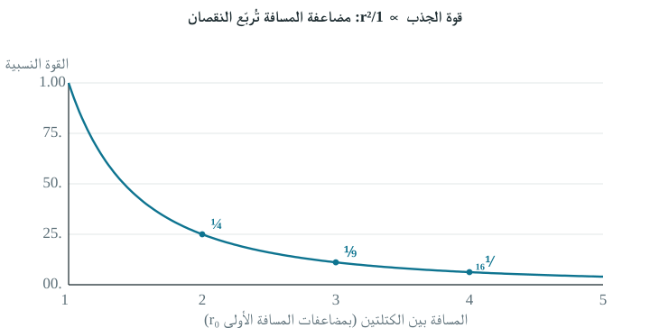

الجاذبية
Gravity
قوة التجاذب الكونية التي تعمل بين كل الأجسام ذات الكتلة، وهي أضعف القوى المعروفة لكنها تحكم حركة الأجرام وبنية الكون.
الجاذبية في الميكانيكا هي قوة التجاذب الكونية التي تعمل بين كل أجسام المادة. هي أضعف قوة معروفة في الطبيعة، ولا دور لها في خصائص المادة اليومية الداخلية، لكن امتدادها الطويل وعمومها يجعلانها تتحكم في مسارات الأجسام في المجموعة الشمسية وما بعدها، وفي بناء النجوم والمجرّات وتطوّرها. على سطح الأرض تمنح الجاذبية الأجسام وزنها، وهو قوة إلى أسفل تتناسب مع الكتلة، ومقدار تسارعها عند السطح نحو 9.8 متر لكل ثانية مربعة. صاغ نيوتن سنة 1687 مفهوم الجذب العام: كل الأجسام ذات الكتلة تتجاذب، ويضعف الجذب كلما زاد البعد. ثم قدّمت النسبية العامة لأينشتاين وصفًا هندسيًّا للجاذبية بوصفها انحناءً في الزمكان، وهو الوصف الذي يفسّر ما لا تفسّره الميكانيكا النيوتنية عند الكتل الكبيرة والسرعات العالية.
كيف تعمل الظاهرة؟
الجذب في الصورة النيوتونية تأثير مباشر بين كتلتين عبر المسافة بلا وسط، تُقاس قوته وتحدّد تسارع الجسمين نحو بعضهما. في الصورة النسبية العامة تُعاد صياغته هندسيًّا: الكتلة والطاقة تُحدِّثان انحناء الزمكان (مترية) والأجسام الحرة تتبع الخطوط الجيوديسية، فيصير «السقوط» حركة على أقصر مسار في هندسة منحنية. الفرق يُقاس عمليًّا: تقدّم حضيض عطارد 43 ثانية قوسية في القرن، وانحراف ضوء النجوم قرب الشمس 1.75 ثانية قوسية، وتأخّر الساعات في بئر جاذبي.
العلاقة بالأرقام
F = G·m₁m₂/r² بـ G = 6.67430×10⁻¹¹ m³/(kg·s²). مضاعفة المسافة تُنقص القوة إلى الربع (25%)، وتثليثها إلى التسع (11%). على سطح الأرض g = 9.81 m/s²، وعلى سطح القمر 1.62 m/s² أي 16.5%. سرعة الهروب من الأرض 11.2 km/s، ومن جهة الشمس 617 km/s عند سطحها. وتُقاس كتلة الكواكب من مداراتها لا من «وزنها»: كتلة الأرض 5.972×10²⁴ kg مأخوذة أصلًا من G ومعامل الجاذبية القياسي GM.
مفاهيم متقاربة
لا يُخلط الجذب بالوزن ولا بالكتلة: الكتلة خاصية جسيم (كمّية المادة/الطاقة) لا تتغيّر بالمكان، والوزن قوة mg تتغيّر مع g، والجذب هو القانون الذي يفسّر تلك القوة. ولا يُخلط الوزن بالثقل الظاهر في مركبة متسارعة. والجذب ليس قوة مغناطيسية ولا كهربائية: شدّته أضعف بـ10³⁶ مرة من الكهرباء، لكنه لا يُقنَّن بإشارة سالبة فما يتراكم لا يُلغى.
حدود التطبيق
قانون نيوتن دقيق في الحدّ البطيء والضعيف فقط: يفشل في مجال قوي (قرب النجوم النيوترونية والثقوب السوداء) وفي سرعات قريبة من الضوء، ويحتاج النسبية العامة. ولا يفسّر دوران المجرات ولا تسارع التوسّع بلا مادّة مظلمة وطاقة مظلمة، وهي افتراضات تُسندها قياسات لا نظرية مكتملة. كما أن الجذب لا يُكمَّم بعد بنجاح تجريبي، والجاذبية الكمومية مسألة مفتوحة.

| الكمية | القيمة | المصدر |
|---|---|---|
| تسارع الجاذبية عند سطح الأرض | ≈ 9.8 متر/ثانية² | [1] |
المصادر
- 1 Gravity — Encyclopaedia Britannica. www.britannica.com/science/gravity-physics · اطُّلع عليه 2026-11-13
استشهد بهذا المصطلح
الصيغتان مبنيتان من بيانات الصفحة نفسها: العنوان والتاريخ ورابط النسخة المنشورة.
الجاذبية — Gravity. (2026). ديوان المعرفة — انفراد. https://infiradev.com/diwan/terms/gravity.html
@misc{gravity2026,
title = {الجاذبية},
titleaddon = {Gravity},
howpublished = {{ديوان المعرفة — انفراد} — مرجع علمي عربي},
year = {2026},
url = {https://infiradev.com/diwan/terms/gravity.html},
urldate = {2026-11-13},
note = {مراجعة علمية: hermes (تأسيس المستودع — مقابل المصدر)}
}
راجعه: hermes (تأسيس المستودع — مقابل المصدر) · 2026-11-13 · آخر تحديث 2026-11-13